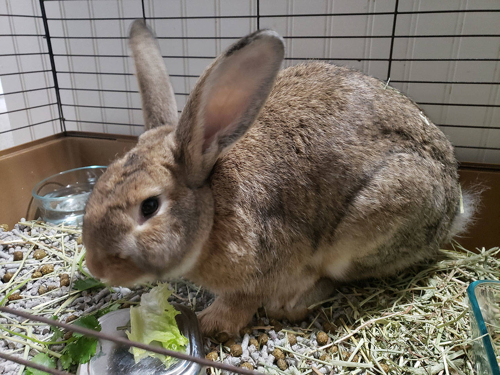
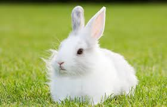

He loves chewing grass
He loves head scratches

He is very adventurous.

| Animal Rescue Services |
|
|---|
|  | haze is 3. He loves chewing grass |
 | Snowy is 1 He loves head scratches |
|
Furry is 2. He is very adventurous. |
|